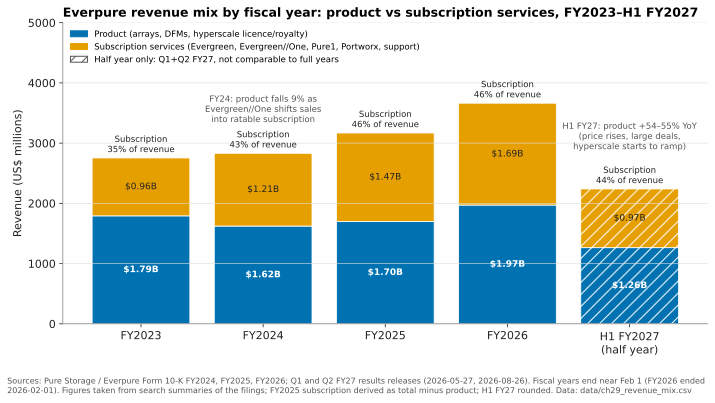
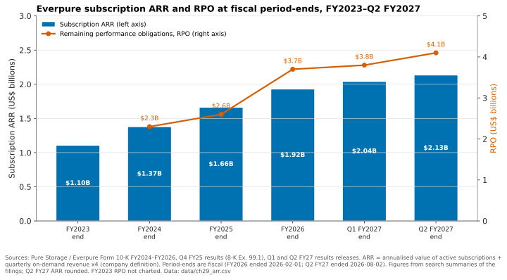

29. Hyperscaler business, ecosystem and financials through a tech lens¶
Depth: L2 · Reading time: ~9 min · Last verified: 2026-11-01 Prerequisites: Purity and DirectFlash · Consumption models · Company history and strategy
TL;DR¶
- Two revenue lines, three businesses. Everpure (NYSE: P, formerly PSTG) sells arrays with NAND on its own books, Evergreen subscriptions recognised ratably, and hyperscale DirectFlash licences where the customer buys the NAND. Each has a different margin profile.
- The hyperscaler model licenses flash-management IP; it does not sell boxes. The first customer, Meta (named in the FY25 10-K), passed 2 EB in FY26. A second top-five hyperscaler signed on 2026-08-10, with revenue from FY28.
- Recurring revenue keeps compounding. At Q2 FY27 (ended 2026-08-02), subscription ARR was $2.13B (+20%) and RPO $4.1B (+44%).
- Technology choices set margins. DirectFlash removes SSD controllers and DRAM from the bill of materials. The 2026 NAND spike has pushed non-GAAP product gross margin (GM) down to 65–66%, subscription GM runs about 75%, and hyperscale licensing is accretive but lumpy.
- The ecosystem is mostly distribution. NVIDIA certifications gate AI deals, Cisco and GSIs carry enterprise volume, and NAND makers sell directly to Everpure's hyperscale customers.
Why this matters for Everpure strategy¶
Everpure raised its FY27 revenue guidance from $4.3–4.4B in February 2026 to $5.03–5.07B in August. The new midpoint is about 38% above FY26's $3.66B12. A dollar of hyperscale licence, FlashArray//C or Evergreen//One revenue differs in cost, cash timing and durability, so the source of growth matters. This chapter links the architecture in Chapter 26 to the numbers analysts model.
Whether the licensing model reaches more than two hyperscalers, and whether it complements or cannibalises arrays, sits near the centre of the equity story.
Core concepts¶
Three revenue engines on one technology stack¶
The 10-K has two revenue lines, product and subscription services. Three engines feed them:
- Arrays sold outright (FlashArray, FlashBlade, FlashBlade//EXA). Everpure buys NAND, builds DirectFlash Modules (DFMs) and books product revenue at shipment; the attached Evergreen//Forever support-and-upgrade subscription is ratable.
- Consumption services, mainly Evergreen//One, an SLA-backed storage-as-a-service priced on capacity used. Everpure keeps the hardware and revenue is ratable, which is why FY24 product revenue fell 9% while subscription rose 26%; the 10-K partly blamed Evergreen//One's consumption model3.
- Hyperscale. DirectFlash and Purity technology is licensed to hyperscalers that buy their own NAND, and the revenue lands in product. Q3 FY26 product revenue was $534.8M (+17.6%) and included royalties from hyperscaler shipments4.

Figure 29.1 — Evergreen//One pulled the mix toward subscription through FY25. In FY27 product revenue is growing faster again, driven by price, large deals and hyperscale.
Data: data/ch29_revenue_mix.csv
Subscription's share of revenue rose from 35% in FY23 to 46% in FY25 and FY26. It then slipped to 44% in H1 FY27, and to 42% in Q2 alone5, because product revenue grew 55% in Q1 and 54% in Q261. The causes: price increases after NAND costs surged (list prices rose on 2026-02-097), larger deals and, from H2 FY27, hyperscale. The recurring base is not weakening; subscription services still grew 17% in Q1 and 20% in Q2.
The hyperscaler model: licensing a controller, not selling a box¶
Semiconductor bridge. DirectFlash takes the SSD's controller ASIC and FTL DRAM out of the drive and moves flash management into Purity (Chapter 26). The hyperscale deals sell that capability the way an IP vendor sells a design: the customer buys the "wafers" (NAND); Everpure supplies design, software and some non-NAND parts, and is paid as capacity deploys.
flowchart LR
EP["Everpure: DirectFlash design + Purity software"]
NAND["NAND makers"]
INT["Integrator / ODM"]
HS["Hyperscaler data centres"]
EPPARTS["Everpure: some non-NAND components"]
NAND -->|"NAND sold directly to hyperscaler"| INT
EPPARTS -->|"parts supply"| INT
EP -->|"design + software licence"| INT
INT -->|"assembled flash shelves"| HS
HS -->|"licence, royalty and support fees per deployment"| EPFigure 29.2 — In hyperscale, the NAND never appears on Everpure's books. Everpure is paid for IP, software, support and some components, so revenue per exabyte is low but gross margin is high.
What is public, in date order:
- Design win (December 2024). With Q3 FY25 results, Pure Storage announced a DirectFlash win with an unnamed top-four hyperscaler. Hardware was excluded: the customer buys from its integrator, and Pure earns licence, software and support fees89. Analysts identified Meta, which the FY25 10-K later named11; the CEO cited Meta's choice of DFMs at the March 2025 FlashBlade//EXA launch10, and the FY2025 10-K names Meta11.
- Volume (FY26). Pure recognised its first revenue in Q2 FY26. The FY26 plan assumed 1–2 EB of DirectFlash deployed12, and by Q3 FY26 Pure said it had beaten its 2 EB forecast4. For scale, 2 EB is about 26,700 modules at 75 TB or 13,300 at 150 TB (deployed sizes undisclosed).
- Standardised model (February 2026). Management said hyperscale terms were now standard: Everpure procures some components, and hyperscalers keep buying NAND through their own supply chains. Revenue follows data-centre build-outs, with most of FY27's expected in Q3–Q413. [VERIFY: search-summary only]
- Second hyperscaler (2026-08-10). Everpure announced a design win and supply agreement with a second unnamed top-five hyperscaler, built on DirectFlash. It contributes little to FY27 and is expected to matter from FY281415. Management said it mirrors the first, and that DirectFlash is mostly replacing SSDs, not disks, for now16. The release itself warns that the customer may not order or deploy the volumes contemplated14.
Worked example (illustrative): why hyperscale lifts margin only at scale. Everpure does not disclose hyperscale gross margin. Analyst commentary puts it around 75–85% (some notes say above 90% for pure royalties)17 [VERIFY: analyst estimates, search-summary only]. Suppose hyperscale is 5% of quarterly revenue at 85% GM and everything else runs at Q2 FY27's 69.9% non-GAAP GM18. Blended GM = 0.95 × 69.9% + 0.05 × 85% = 66.4% + 4.25% ≈ 70.7%, a lift of about 0.8 points. At a 10% share it is 0.90 × 69.9% + 0.10 × 85% ≈ 71.4%. Hyperscale moves the blend only at double-digit revenue share. Q3 FY26 is the real-world version: royalties helped lift non-GAAP product GM to 72.9% (from 67.4%) and GAAP GM to 72.3%419. But management said the newer models, with Everpure supplying components, bring hyperscale margins closer to the company average19, so 85% is an upper case.
Subscription ARR and RPO: what the backlog says¶
Everpure defines subscription ARR as the annualised contract value of active subscriptions at quarter-end plus that quarter's on-demand revenue × 43. RPO (remaining performance obligations) is contracted revenue not yet recognised: undelivered product plus the unexpired years of multi-year subscriptions.

Figure 29.3 — ARR has compounded at about 21% a year, while RPO stepped up sharply in FY26 as large deals and longer Evergreen terms added to the backlog.
Data: data/ch29_arr.csv
How to read it:
- Growth rate. (2.13 ÷ 1.10)^(1/3.5 years) ≈ 1.21, about 21% a year31.
- The RPO step. RPO grew 40% in FY26 (14% in FY25) on large deals and longer Evergreen contracts20. Some growth was borrowed: longer renewals slowed ARR growth to 16% and net dollar retention fell from 117% to 113%21.
- Sanity check. Q2 subscription revenue of $499M × 4 ≈ $2.0B sits just below $2.13B ARR, which includes on-demand run-rate and late-quarter starts. RPO is about 1.9× ARR.
Tech lens. In Evergreen//One, Everpure owns the hardware and charges per TB used, so DFM density, data reduction and watts per TB set its margin, and non-disruptive upgrades make multi-year SLAs workable. Evergreen//One sales grew 73% in Q1 FY276, and storage-as-a-service total contract value (TCV) was $277M in Q2 (+121%)16 [VERIFY: TCV from call summaries].
Gross-margin drivers tied to technology¶
| Driver | Technology mechanism | Margin effect | Public evidence |
|---|---|---|---|
| DirectFlash vs SSD bill of materials | No per-drive controller ASIC or FTL DRAM. An SSD needs about 1 GB of DRAM per TB, because it keeps a 4-byte map entry for each 4 KiB page. Purity manages NAND globally, with less hidden over-provisioning | Lower $/TB than buying finished SSDs, which supports product GM while Everpure prices aggressively | Q4 FY26 product GM 67.3%, up more than 400 bp on mix22 |
| NAND pricing pass-through | Everpure buys NAND for enterprise arrays. NAND contract prices rose steeply through 2026, with TrendForce forecasting another +15–20% QoQ for 4Q26 (enterprise SSDs reportedly +23–28%)23 | Costs rise before price lists do. Margin lags and then recovers. Securing supply uses cash | Price rise on 2026-02-097; non-GAAP product GM 65.5% in Q1 and 66.2% in Q2 FY27618; Q2 free cash flow (FCF) –$238M on strategic NAND buys24 |
| Evergreen//Forever and //One | Software-heavy support plus non-disruptive upgrades. With //One, Everpure also carries the hardware | Subscription GM about 75%. Hardware-heavy //One mix can dilute it relative to pure support [VERIFY: //One cost composition] | Non-GAAP subscription GM 75.6% in Q1 and 74.9% in Q2 FY27618 |
| Hyperscale licensing | The customer buys the NAND. Everpure supplies IP, software, support and some non-NAND parts | Royalty-like and margin-accretive, but lumpy and tied to customers' build-outs | Q3 FY26 GAAP GM 72.3%, helped by royalties4; model standardised in Feb 202613 |
| Deal and product mix | Large AI and enterprise deals; QLC capacity tiers (//C, //E) priced against disk | Management says it is deliberately running near the bottom of the 65–70% product GM range to win share | Long-term product GM range 65–70%25 |
| Software attach | Portworx, Fusion, Data Intelligence (ex-1touch) | Close to pure software, but too small today to move the blend | Not separately disclosed |
Table 29.1 — Every margin line traces back to a technology choice: who owns the NAND, how much of the drive Everpure designs, and who owns the hardware after the sale.
The ecosystem map¶
flowchart LR
EP(("Everpure"))
NV["NVIDIA"]
CS["Cisco FlashStack"]
HS1["Hyperscaler 1, reported as Meta"]
HS2["Top-5 hyperscaler 2"]
AZ["Microsoft Azure"]
AWS["AWS"]
NAND["Micron, Kioxia NAND"]
NEO["Neoclouds: CoreWeave, STN"]
ISV["ISVs: Veeam, Commvault, Rubrik, CrowdStrike"]
PLT["Platforms: Nutanix, Red Hat"]
CH["Channel and GSIs: WWT, AHEAD, ePlus, SHI"]
NV ---|"certification + reference designs"| EP
CS ---|"converged stack + co-sell"| EP
EP -->|"DirectFlash licence + parts"| HS1
EP -->|"design win, FY28 ramp"| HS2
AZ ---|"co-developed native service"| EP
AWS ---|"marketplace + self-managed cloud"| EP
NAND -->|"QLC supply + DFM qualification"| EP
NAND -.->|"NAND sold direct"| HS1
EP -->|"equity stake + EXA supply"| NEO
ISV ---|"snapshot + security integrations"| EP
PLT ---|"external storage + Kubernetes"| EP
CH -->|"resell + integrate"| EPFigure 29.4 — Most of the ecosystem is distribution and validation, not revenue. The hyperscaler edges are the exception: there the NAND makers sell around Everpure, straight to its customer.
- Validation (NVIDIA). SuperPOD (November 2024)26, NVIDIA-Certified Storage and NCP high-performance storage (March 2025)27 for FlashBlade//S; Data Stream on the AI Data Platform design28; BlueField-4 STX partner29. No fees, but no shortlist without them (Chapter 27, Chapter 34).
- Converged distribution. FlashStack joined Cisco's Secure AI Factory with NVIDIA in late 2025, sold via AHEAD, ePlus, SHI and WWT30.
- Hyperscalers, two roles. DirectFlash customers, and cloud channels: Everpure Cloud Azure Native, co-developed with Microsoft31, and Cloud Dedicated on AWS and Azure32 (Chapter 28).
- Neoclouds. A November 2024 CoreWeave stake made Pure a preferred storage option there33, though Evercore noted investors rated it below a tier-1 hyperscaler win34; CoreWeave later signed a far larger deal with VAST35. STN's GPU cloud runs on FlashBlade//EXA36, and Evergreen//One reached EXA in March 202637 (Chapter 35).
- NAND. Micron and Kioxia supply and co-qualify DFM NAND (Chapter 26)38.
- ISVs and platforms. Veeam (Fusion plug-in)39, Commvault (IntelliSnap)40, Rubrik and CrowdStrike (Enterprise Data Cloud)41, and Nutanix AHV external storage (May 2025)42.
How Everpure approaches it vs. competitors¶
| Dimension | Everpure | VAST Data (private) | NAND/SSD makers (Samsung, SK hynix/Solidigm, Micron, Kioxia) | Incumbent arrays (Dell, NetApp, HPE) |
|---|---|---|---|---|
| What hyperscalers buy | DirectFlash design + Purity licence + some parts; two top-5 wins | Software on partner hardware; strongest with neoclouds | Standard or custom SSDs, often running hyperscaler firmware | Little at hyperscale; strength is enterprise |
| Who owns NAND cost | Everpure (enterprise); customer (hyperscale) | Hardware partner or customer | Supplier, and it captures the 2026 price spike | Vendor, which buys SSDs |
| Neocloud motion | CoreWeave stake, STN, EXA with multi-tenancy | $1.17B CoreWeave agreement (company-stated)35 | Indirect, via servers | Dell AI Data Platform; NetApp AFX43 |
| NVIDIA alignment | SuperPOD, Certified Storage, NCP, STX partner | STX partner, deep NVIDIA ties | Component suppliers to NVIDIA systems | STX partners29 |
| Revenue durability | 42–46% subscription; $4.1B RPO | Company-stated ARR only | Cyclical | Own subscription programs (Ch 23) |
Table 29.2 — Everpure is the only array vendor publicly known to monetise its flash design inside hyperscalers. VAST owns the neocloud software position, and the NAND makers capture the commodity price cycle.
Steelman the alternatives. Hyperscalers have deep firmware teams and buy SSDs at huge volume, so the default is commodity drives (Chapter 36); DirectFlash must win on power and density TCO. NAND makers bank the 2026 price spike that Everpure's enterprise business absorbs. VAST's software-only model lets neoclouds own and finance hardware; Everpure's hyperscale licence model is a partial answer in the same spirit.
History and trajectory¶
Signals to watch:
- Q3 FY27 (quarter ending around 2026-11-01) is guided at $1.325–1.335B and is the first quarter with significant hyperscale revenue expected15. It had not been reported by 2026-11-01.
- At the 2026-09-23 Financial Analyst Meeting, Everpure reaffirmed FY27 guidance and gave a preliminary FY28 outlook of $7.0–7.3B revenue (+39–45%) and $1.7–1.9B non-GAAP operating income. It expects three new vectors (Modern Data Software, Scale AI, Hyperscale Solutions) to reach only about 20% of revenue by FY20304445.
- One transcript summary says Everpure will report hyperscale as a single total, not customer by customer46. [VERIFY: Chinese-language summary only]
- NAND contract prices are still rising into 4Q2623, so product GM likely stays near the range floor.
Numbers that matter¶
| Metric | Value | Context | Source / date |
|---|---|---|---|
| FY26 revenue (product / subscription) | $3,662.8M ($1,971.7M / $1,691.2M) | FY ended 2026-02-01; +16% | 10-K FY2621 |
| Q2 FY27 revenue | $1.19B (+38%); product $687M (+54%) | Quarter ended 2026-08-02 | Release, 2026-08-261 |
| Subscription ARR | $2.13B (+20%) | Q2 FY27 end | Release, 2026-08-261 |
| RPO | $4.1B (+44%) | Q2 FY27 end; $3.7B at FY26 end | Release1; ARS FY2620 |
| Gross margin, Q2 FY27 | 68.4% GAAP / 69.9% non-GAAP; product 66.2%, subscription 74.9% (non-GAAP) | Product at low end of 65–70% range | Slides, 2026-0818 |
| Hyperscale volume | More than 2 EB in FY26 | Original plan 1–2 EB | B&F, 2025-12-034 |
| FY27 revenue guidance | $5.03–5.07B | Up from $4.3–4.4B (Feb 2026) | Release, 2026-08-261 |
| Q2 FY27 free cash flow | –$238M | Strategic NAND and component buys | Yahoo Finance, 2026-0824 |
| Illustrative blended GM lift | +0.8 pt at 5% hyperscale mix | Assumes 85% hyperscale GM | Worked example, this chapter |
Conversation playbook¶
Questions for a PM
- "Which hyperscale components do we procure, and which does the customer source?" Strong answer: NAND stays with the customer; Everpure supplies parts where its design adds value, trading margin percentage for revenue per exabyte.
- "What drives Evergreen//One cost per TB, and how does the DFM roadmap change it?" Strong answer: density, data reduction, power and refresh cadence under the SLA.
- "Which certification has moved the most AI pipeline?" Strong answer: specific (NCP for neoclouds, Cisco Secure AI Factory for enterprise), tied to win rates, not logos.
Questions for an engineer
- "What changes when Purity runs on a hyperscaler's hardware and fleet tooling?" Strong answer: telemetry, firmware updates, and the boundary with the hyperscaler's own storage software.
- "Why is DirectFlash replacing SSDs before HDDs at hyperscale?" Strong answer: performance tiers adopt first; the $/TB gap with disk delays displacement.
- "How exposed is DFM qualification to one NAND supplier?" Strong answer: Micron and Kioxia dual-sourcing, and qualification lead times per NAND generation.
Don't say this:
- "Everpure sells Meta storage arrays." It licenses technology and supplies some parts. Meta buys the NAND.
- "Subscription share fell, so recurring is weakening." It grew about 20%; product grew faster.
- "Hyperscale will lift margins immediately." Not until it reaches double-digit revenue share.
- "RPO is all subscription." It includes undelivered product.
- "Everpure has named the second hyperscaler." It has not; only Meta is named.
Going deeper (optional, L3 pointers)¶
- The ASC 606 treatment of hyperscale licence revenue (point-in-time or over time) in the FY26 10-K and the FY27 10-Qs.
- The Q4 FY26 and Q2 FY27 prepared remarks on Everpure's investor site, for hyperscale model wording1347.
- FTL DRAM and over-provisioning mechanics: Inside an SSD; NAND pricing: Chapter 48.
Key terms¶
- Subscription ARR — annualised value of active subscriptions plus on-demand run-rate.
- RPO — contracted revenue not yet recognised.
- Design win — a customer's commitment to build its platform around a supplier's technology.
- Royalty / licence revenue — fees paid per unit deployed for the use of IP.
- TCV — total contract value over a contract's life.
- NAND pass-through — how quickly NAND cost changes reach customer prices.
- See the glossary for the rest.
Sources¶
-
Everpure, "Everpure Announces Second Quarter Fiscal 2027 Financial Results," 2026-08-26. https://investor.everpuredata.com/news-and-events/press-releases/press-release-details/2026/Everpure-Announces-Second-Quarter-Fiscal-2027-Financial-Results/default.aspx (retrieved 2026-11-01). ↩↩↩↩↩↩↩↩
-
Futurum Group, "Everpure Q4 FY 2026 Revenue Passes $1 Billion as Platform Strategy Scales," 2026-02. https://futurumgroup.com/insights/everpure-q4-fy-2026-revenue-passes-1-billion-as-platform-strategy-scales (retrieved 2026-11-01). ↩
-
Pure Storage, "Form 10-K for fiscal year ended February 4, 2024," 2024-04. https://www.sec.gov/Archives/edgar/data/1474432/000162828024013860/pstg-20240204.htm (retrieved 2026-11-01). ↩↩↩
-
Blocks & Files, "Pure Storage hikes full-year forecast after solid Q3," 2025-12-03. https://www.blocksandfiles.com/2025/12/03/pure-storage-hikes-full-year-forecast-after-solid-q3/1720082 (retrieved 2026-11-01). ↩↩↩↩↩
-
Nasdaq, "Everpure Q2 Earnings Call Highlights," 2026-08. https://www.nasdaq.com/articles/everpure-q2-earnings-call-highlights (retrieved 2026-11-01). ↩↩
-
Nasdaq, "Everpure Q1 Earnings Call Highlights," 2026-05. https://www.nasdaq.com/articles/everpure-q1-earnings-call-highlights (retrieved 2026-11-01). ↩↩↩↩
-
Alpha Spread, "P Q4-2026 Earnings Call," 2026-02-25. https://www.alphaspread.com/security/nyse/p/investor-relations/earnings-call/q4-2026 (retrieved 2026-11-01). ↩↩
-
SiliconANGLE, "Shares of Pure Storage jump on impressive earnings beat and strong guidance," 2024-12-03. https://siliconangle.com/2024/12/03/shares-pure-storage-jump-impressive-earnings-beat-strong-guidance/ (retrieved 2026-11-01). ↩
-
Blocks & Files, "Pure Storage notches up hyperscaler deal, revenue uptick," 2024-12-04. https://www.blocksandfiles.com/block/2024/12/04/pure-storage-notches-up-hyperscaler-deal-revenue-uptick/1596200 (retrieved 2026-11-01). ↩
-
Futurum Group, "Pure Storage Announces FlashBlade//EXA for the AI Factory," 2025-03. https://futurumgroup.com/insights/pure-storage-announces-flashblade-exa-for-the-ai-factory (retrieved 2026-11-01). ↩
-
SEC, "Pure Storage, Inc. Form 10-K for fiscal year ended February 2, 2025," 2025-04. https://www.sec.gov/Archives/edgar/data/1474432/000162828025015044/pstg-20250202.htm (seen via search summary, 2026-11-01). ↩↩
-
Blocks & Files, "Pure knocking it out of the park," 2025-08-29. https://blocksandfiles.com/2025/08/29/pure-knocking-it-out-of-the-park/ (retrieved 2026-11-01). ↩
-
Everpure, "Q4 FY26 Prepared Remarks," 2026-02-25. https://s21.q4cdn.com/687136699/files/doc_financials/2026/q4/Q4FY26-Everpure-Prepared-Remarks.pdf (retrieved 2026-11-01; content seen via search summary only). ↩↩↩
-
Everpure, "Everpure Lands New Design Win with Second Top-Five Hyperscaler," 2026-08-10. https://www.everpuredata.com/company/newsroom/press-releases/everpure-lands-new-design-win-with-second-top-five-hyperscaler.html (retrieved 2026-11-01). ↩↩
-
Blocks & Files, "Second hyperscaler plumps for Everpure's flash technology," 2026-08-11. https://www.blocksandfiles.com/flash/2026/08/11/second-hyperscaler-plumps-for-everpures-flash-technology/5285903 (retrieved 2026-11-01). ↩
-
Motley Fool, "Everpure (P) Q2 2027 Earnings Call Transcript," 2026-08-31. https://www.fool.com/earnings/call-transcripts/2026/08/31/everpure-p-q2-2027-earnings-call-transcript/ (retrieved 2026-11-01). ↩↩
-
Blocks & Files, "Pure Storage hammers revenue guidance as Meta deal boosts bottom-line outlook," 2025-08-29. https://www.blocksandfiles.com/ai-ml/2025/08/29/pure-storage-hammers-revenue-guidance-as-meta-deal-boosts-bottom-line-outlook/1610155 (retrieved 2026-11-01; analyst margin estimates seen via search summary only). ↩
-
Investing.com, "Everpure Q2 FY27 slides: 38% revenue growth, guidance raised sharply," 2026-08. https://www.investing.com/news/company-news/everpure-q2-fy27-slides-38-revenue-growth-guidance-raised-sharply-93CH-4878054 (retrieved 2026-11-01). ↩↩↩↩
-
Futurum Group, "Pure Storage Q3 FY 2026 Results: Revenue Up 16% YoY, Guidance Raised," 2025-12. https://futurumgroup.com/insights/pure-storage-q3-fy-2026-results-revenue-up-16-yoy-guidance-raised/ (retrieved via search summary 2026-11-01); Pure Storage, "Form 10-Q for the quarter ended November 2, 2025." https://www.sec.gov/Archives/edgar/data/1474432/000147443225000065/pstg-20251102.htm (retrieved via search summary 2026-11-01). ↩↩
-
Everpure, "Form ARS for fiscal year 2026," 2026. https://www.sec.gov/Archives/edgar/data/0001474432/000147443226000043/a10kfy2026.htm (retrieved 2026-11-01). ↩↩
-
Everpure, "Form 10-K for fiscal year ended February 1, 2026," 2026-03-24. https://www.sec.gov/Archives/edgar/data/1474432/000147443226000027/pstg-20260201.htm (retrieved 2026-11-01). ↩↩
-
Morningstar / PR Newswire, "Everpure Announces Fiscal Fourth Quarter and Full Year 2026 Financial Results," 2026-02-25. https://www.morningstar.com/news/pr-newswire/20260225sf95343/everpure-announces-fiscal-fourth-quarter-and-full-year-2026-financial-results (retrieved 2026-11-01). ↩
-
TrendForce, "AI Server Demand Sustains Memory Contract Price Increases in 4Q26, While Consumer-Side Pressure Persists," 2026-09-30. https://www.trendforce.com/presscenter/news/20260930-13258.html (retrieved 2026-11-01). ↩↩
-
Yahoo Finance, "Everpure (P) Grew Revenue 38% but Free Cash Flow Was Negative," 2026-08. https://finance.yahoo.com/markets/stocks/articles/everpure-p-grew-revenue-38-023544268.html (retrieved 2026-11-01). ↩↩
-
CNHI News, "Everpure" (analyst-meeting coverage), 2026-09. https://www.cnhinews.com/news/article_df7adf0b-e673-56b4-99bf-f49ea5156bf0.html (retrieved 2026-11-01). ↩
-
Blocks & Files, "Pure FlashBlade SuperPOD certification," 2024-11-18. https://blocksandfiles.com/2024/11/18/pure-flashblade-superpod-certification/ (retrieved 2026-11-01). ↩
-
Blocks & Files, "Pure Storage expands AI capabilities with Nvidia certification," 2025-03-19. https://www.blocksandfiles.com/ai-ml/2025/03/19/pure-storage-expands-ai-capabilities-with-nvidia-certification/1595136 (retrieved 2026-11-01). ↩
-
HPCwire / BigDATAwire, "Everpure Announces Data Stream to Expand AI-Ready Data Offerings," 2026-06-17. https://www.hpcwire.com/bigdatawire/this-just-in/everpure-announces-data-stream-to-expand-ai-ready-data-offerings/ (retrieved 2026-11-01). ↩
-
StorageNewsletter, "Nvidia GTC 2026: Nvidia Launches BlueField-4 STX Storage Architecture With Broad Industry Adoption," 2026-03-17. https://www.storagenewsletter.com/2026/03/17/nvidia-gtc-2026-nvidia-launches-bluefield-4-stx-storage-architecture-with-broad-industry-adoption/ (retrieved 2026-11-01). ↩↩
-
StorageNewsletter, "Pure Storage and Cisco Deliver AI Factories for the Enterprise with Nvidia," 2025-11-07. https://www.storagenewsletter.com/2025/11/07/pure-storage-and-cisco-deliver-ai-factories-for-the-enterprise-with-nvidia/ (retrieved 2026-11-01). ↩
-
Blocks & Files, "Pure Enterprise Data Cloud updates," 2025-09-26. https://blocksandfiles.com/2025/09/26/pure-enterprise-data-cloud-updates/ (retrieved 2026-11-01). ↩
-
Microsoft Learn, "Pure Storage Cloud overview," n.d. https://learn.microsoft.com/en-us/azure/partner-solutions/pure-storage/overview (retrieved 2026-11-01). ↩
-
Pure Storage, "Pure Storage Announces Strategic Investment and Technology Partnership with CoreWeave," 2024-11. https://www.purestorage.com/company/newsroom/press-releases/pure-announces-strategic-investment-and-tech-partnership-with-coreweave.html (retrieved 2026-11-01). ↩
-
TipRanks / The Fly, "Evercore says CoreWeave deal could yield sizable contributions for Pure Storage," 2024-11. https://www.tipranks.com/news/the-fly/evercore-says-coreweave-deal-could-yield-sizable-contributions-for-pure-storage (retrieved 2026-11-01). ↩
-
StorageNewsletter, "Vast Data Secures Commercial Partnership Deal with CoreWeave for $1.17 Billion to Power the Next Generation of AI," 2025-11-07. https://www.storagenewsletter.com/2025/11/07/vast-data-secures-commercial-partnership-deal-with-coreweave-for-1-17-billion-to-power-the-next-generation-of-ai/ (retrieved 2026-11-01). ↩↩
-
Everpure, "STN customer story," n.d. https://www.everpuredata.com/au/customers/stn.html (retrieved 2026-11-01). ↩
-
IT Brief, "Everpure expands AI storage, adds Data Stream beta," 2026-03. https://itbrief.news/story/everpure-expands-ai-storage-adds-data-stream-beta (retrieved 2026-11-01). ↩
-
Blocks & Files, "Pure qualifies Micron's 276-layer flash," 2025-01-08. https://blocksandfiles.com/2025/01/08/pure-qualifies-microns-276-layer-flash/ (retrieved 2026-11-01). ↩
-
Veeam, "Everpure + Veeam Partnership," n.d. https://www.veeam.com/solutions/alliance-partner/everpure.html (retrieved 2026-11-01). ↩
-
Commvault, "Everpure supported technologies," 2026-02. https://www.commvault.com/supported-technologies/everpure (retrieved 2026-11-01). ↩
-
Blocks & Files, "Pure debuts Enterprise Data Cloud with Fusion updates and new FlashArray systems," 2025-06-18. https://www.blocksandfiles.com/ai-ml/2025/06/18/pure-debuts-enterprise-data-cloud-with-fusion-updates-and-new-flasharray-systems/100996 (retrieved 2026-11-01). ↩
-
SDxCentral, "Nutanix partners with Pure Storage in latest VMware assault," 2025-05. https://www.sdxcentral.com/news/nutanix-partners-with-pure-storage-in-latest-vmware-assault/ (retrieved 2026-11-01). ↩
-
Blocks & Files, "NetApp disaggregates ONTAP storage and provides an AI Data Engine," 2025-10-14. https://blocksandfiles.com/2025/10/14/netapp-disaggregates-ontap-storage-and-provides-an-ai-data-engine/ (retrieved 2026-11-01). ↩
-
Quiver Quantitative, "Why Everpure (P) Stock Is Up Today," 2026-09. https://www.quiverquant.com/news/Why+Everpure+%28P%29+Stock+Is+Up+Today (retrieved 2026-11-01). ↩
-
StorageNewsletter (Everpure release), "Everpure's Expanding Business Model Fuels New Long-Term Outlook," 2026-10-01. https://www.storagenewsletter.com/2026/10/01/everpures-expanding-business-model-fuels-new-long-term-outlook/ (retrieved via search summary 2026-11-01). ↩
-
StatementDog, "Everpure Inc (P) 2027 Q2 earnings call transcript (Chinese)," 2026-08. https://statementdog.com/analysis/P/earnings_calls/318913 (retrieved 2026-11-01). ↩
-
Everpure, "Q2 FY27 Prepared Remarks," 2026-08-26. https://s21.q4cdn.com/687136699/files/doc_financials/2027/q2/Q2FY27-Prepared-Remarks.pdf (retrieved 2026-11-01). ↩